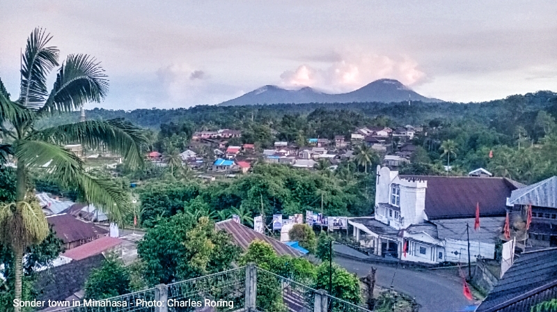

King Bird of Paradise (Cicinnurus regius) is one of the forty two species of Birds of Paradise that are known to science. The bird lives in tropical rainforest of mainland New Guinea especially in lowland and lower montane forests. This paradise bird is very small compared to other mainland species such as the Magnificent Bird of Paradise, Glossy-mantled Manucode, or Lesser Birds of Paradise. The size of the male bird is 16 cm, relatively the same as the size of Wilson's Bird of Paradise. King Bird of Paradise lives in tangled rattan vines that are hanging in a tall tree. In West Papua, local people call it: Burung Cendrawasih Belah Rotan. Burung means bird, belah means split and rotan means rattan - a kind of climbing palm that has been used as raw material for making furniture. Actually, this is a confusing name because local people also call the Magnificent Bird of Paradise as Cendrawasih Belah Rotan. In Indonesian language, the King Bird of Paradise can be translated as Burung Cendrawasih Raja.
When I organize birdwatching trip in West Papua, I usually include King Bird of Paradise in my target list. There are several places which tourists can go to watch it. Some of them include Susnguakti forest of Manokwari, and Tambrauw mountains. From previous trips, I know that this paradise bird shows up later. So, when I guide tourists in the jungle, I will bring them to watch other birds first, such as the Common Paradise Kingfisher (Tanysiptera galatea), Yellow-billed Kingfisher, Rufous-bellied Kookaburra, or the Lesser Birds of Paradise (Paradisaea minor). We can hear their calls earlier at approximately 06.00. For the King Bird of Paradise, we usually go to the display tree of the bird at 08.00 and watch the bird until 11.00.
Because the bird is very small, I usually ask local villagers whose eyes are very "sharp" to spot the bird. A good bird spotter will increase the chance of seeing the bird. When the bird spotter has found the bird, I will use binoculars to check where he sits and then aim my spotting scope to the bird. He calls his female counterpart in the mornings and in the afternoons. When she comes and land on the nearby vine, he will jump up and down from lower vine to higher vine. He will also perform his courtship dance by standing close to his female bird and expand his feather. After that he will shake his body and wings in unique movements to attract the female King Bird of Paradise for mating.
To watch this King Bird of Paradise, visitors need to fly to Sorong city or Manokwari city.
As a tour guide, I could organize your trip to rainforest of West Papua to watch the bird and other beautiful tropical birds live.
Before traveling to West Papua for watching birds, and other wildlife, you need to make several preparations. Walking in the forest will usually include hiking up and down steep slopes. Make sure that you do regular exercises for your physical preparations. Your photographic equipment should be good but light. A D-SLR camera with telephoto lens such as Sigma 150-600mm sport is a good choice but do not forget to bring some extra batteries.and memories. A small pocket camera will also be useful for taking pictures of landscapes, flowers, butterflies, and people. Flash light is needed for night walk in the forest.
In general, birdwatchers spend 3 to 4 days. In addition to King Bird of Paradise, they will be able to watch Lesser Birds of Paradise, Magnificent Riflebird, Glossy-mantled Manucode, Common Paradise Kingfisher, Yellow-billed Kingfisher, Azure Kingfisher, Rufous-bellied Kookaburra, Superb Fruit Dove, Brown Cuckoo Dove, Pink-spotted Fruit Dove, Pinon Imperial Pigeon, Hooded Butcherbird, Golden Cuckooshrike, Frilled Monarch, Eclectus Parrot, Yellow-capped Pygmy Parrot, Coconut Lorikeet, Blyth's Hornbill, Mimic Meliphaga, Black Sunbird, Hooded Pitta, Red-bellied Pitta, and a lot more.
This birding trip to forest of mainland West Papua can be combined with tours to Raja Ampat.
This is written by Charles Roring
HIKING AND BIRDWATCHING TOUR IN MINAHASA HIGHLAND
Minahasa is a regency in the Province of Indonesia. It is a highly recommended destination for visitors who love nature. There are forest, farmland, paddy fields, villages that visitors can explore when hiking around its highland region.

Minahasa is also a destination for birdwatchers. There are a lot of sites for visitors to enjoy walking tour and birdwatching. For example, the Subdistrict town of Sonder has got high elevation forest that is the habitat of Sulawesi Blue Flycatcher, Warbling White-eye, Sulawesi Cuckoo Dove, Crimson Sunbird, Black-faced Munia, Sulawesi Pygmy Woodpecker, Sulphur-bellied Whistler, and a lot more.

Walking down the slope of the forest to Sonder's forest in Tounelet village, visitors could find Sooty-headed Bulbul, Sulawesi Hanging Parrot, Sahul Sunbird, Gray-sided Flowerpecker, Yellow-sided Flowerpecker, Pale Blue Monarch, Black-naped Oriole, Grey-cheeked Green Pigeon, Collared Kingfisher, Cattle Egret, Brush Cuckoo, Little Egret and etc. The forest in Tounelet slope ia small but is is the habitat of a lot of species of birds.

If tourists explore the farmland of Subdistrict town of Sonder, they will see more birds including Slender-billed Crow, Zebra Dove, Rock Pigeon, Eastern Yellow Wagtail, Cinnamon Bittern, White-breasted Woodswallow, Purpler Heron, Finch-billed Myna, and etc.
Farm Tour
Most of the inhabitants of Minahasa highland work as farmers. They plant various kinds of crops such as rice, corn, banana, tomato, chilli, spring onion, aubergine, kangkung, vanilla, brenebon (kidney bean), durian, papaya and etc.

Visitors can explore the farmlands of Minahasa and see how farmers work in their lands and at the same watch birds, and butterflies of the region
Getting to Minahasa
Visitors who want to spend their holiday time in Minahasa need to fly from their countries to Manado city in Indonesia.


From Manado city, the trip to Minahasa highland can be dine by car to Tomohon and Sonder towns. There are hotels and homestays in Minahasa that visitors can choose during their stay in the highland.
If you are interested in visiting Minahasa highland to enjoy walking tour, see the villages and their agricultural lands, as well as wathing birds and butterflies, you could contact me (Charles Roring) by whatsapp to: +6281332245180 or email to: peace4wp@gmail.com for tour program and cost.